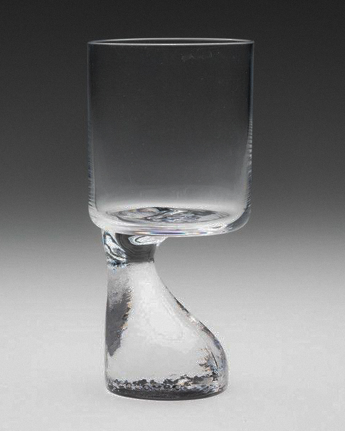
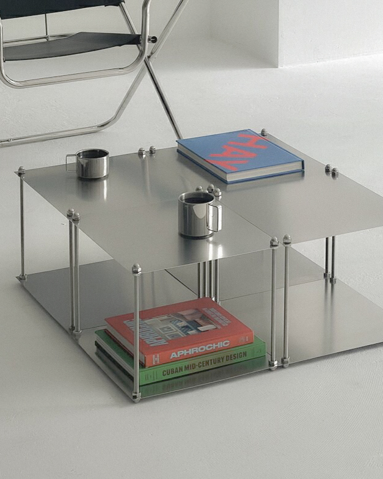
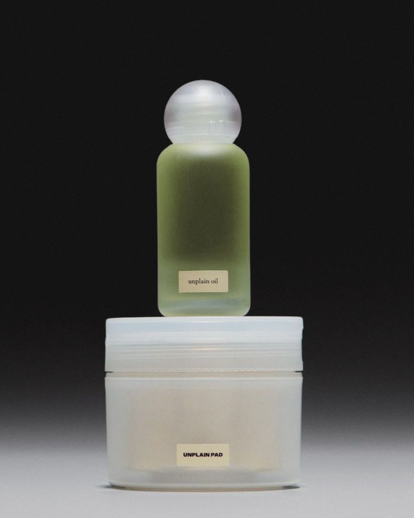
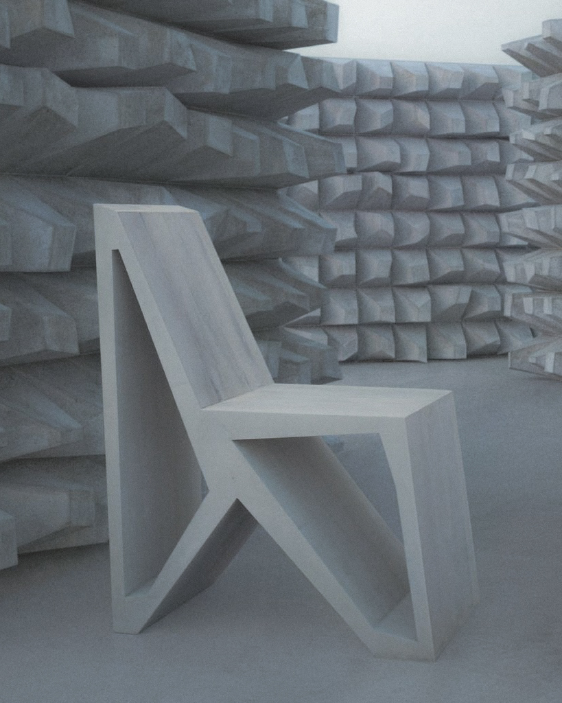
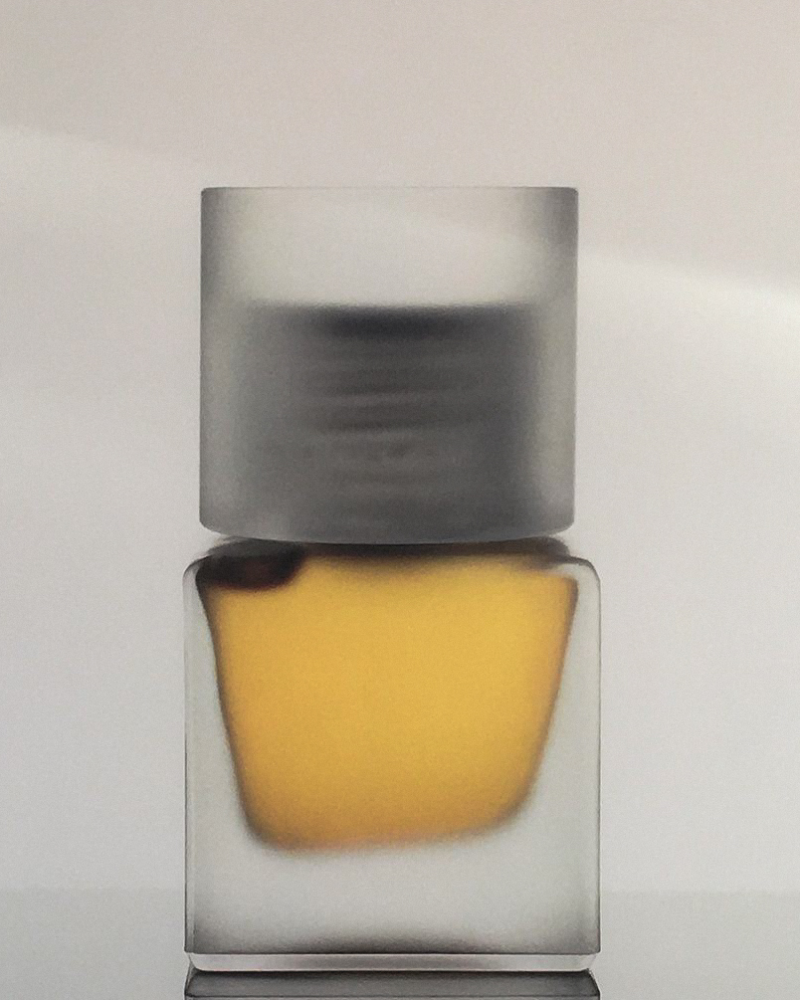

Diseñadora de vidrio y materiales
Colección de piezas de cristal soplado con bases texturizadas que exploran la fusión entre transparencia y rugosidad. Cada pieza combina la pureza del vidrio transparente con una base orgánica de acabado mate.
Septiembre 20-30

Diseñador industrial y arquitecto
Mesa auxiliar modular en acero y vidrio que combina simplicidad estructural con versatilidad funcional. Diseñada con niveles para almacenamiento de libros y objetos, con un acabado industrial minimalista.
Octubre 3-15

Studio de diseño minimalista
Línea de productos de cuidado personal que celebra la simplicidad. Envases traslúcidos con etiquetas minimalistas que reflejan la pureza de su contenido, combinando funcionalidad con estética reduccionista.
Octubre 18-30

Studio de Diseño Geométrico
Silla conceptual que explora la geometría pura y el minimalismo estructural. Diseñada en hormigón blanco, la pieza dialoga con su entorno modular, creando una experiencia visual y funcional única.
Noviembre 5-17

Estudio de Diseño en Vidrio
Recipientes de vidrio que juegan con la luz y el color. Cada pieza explora la interacción entre forma, transparencia y contenido, creando composiciones visuales que transforman lo cotidiano en arte funcional.
Noviembre 22-diciembre 5
Los objetos que exhibimos surgen del diseño industrial, gráfico y de producto, con especial atención a piezas que resuelven problemas concretos de la vida contemporánea. Nos interesan los diseñadores que trabajan desde la funcionalidad inteligente, la innovación en materiales y la mejora de la experiencia del usuario en objetos cotidianos.
Nuestro programa incluye mobiliario para espacios de trabajo modernos, accesorios tecnológicos, packaging innovador, herramientas ergonómicas y productos que faciliten la vida digital. Buscamos diseños que demuestren cómo la buena resolución formal puede mejorar significativamente nuestra interacción con los objetos.
Privilegiamos el trabajo de diseñadores que experimentan con nuevos materiales, procesos de fabricación digital y técnicas de prototipado rápido. Esta aproximación tecnológica al diseño de objetos abre posibilidades formales y funcionales que antes eran impensables, generando productos verdaderamente innovadores.
Las exposiciones suelen incluir prototipos, bocetos y modelos de desarrollo que permiten entender el proceso de diseño desde la idea inicial hasta el producto final. Esta dimensión pedagógica ayuda a comprender la complejidad y rigurosidad que implica el buen diseño industrial.
Organizamos charlas con diseñadores donde se abordan aspectos técnicos como selección de materiales, procesos productivos, costos de fabricación y estrategias de comercialización. Estos encuentros proporcionan información valiosa para estudiantes y profesionales que buscan desarrollar sus propios productos.
El espacio permite que los objetos sean manipulados y probados por los visitantes, entendiendo que el diseño industrial debe evaluarse tanto visualmente como a través de la experiencia de uso. Esta interacción directa distingue nuestra propuesta de las exhibiciones de arte tradicionales.
Finalmente, promovemos el diseño sustentable y socialmente responsable, dando espacio a proyectos que consideren el impacto ambiental, la producción local y la accesibilidad económica. Creemos que el buen diseño debe contribuir a mejorar la calidad de vida de manera inclusiva y consciente.